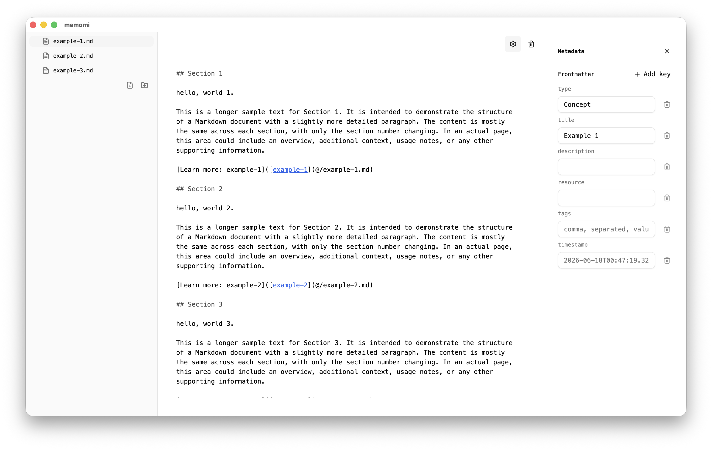

The Open Knowledge Format editor.
memomi is a memo app that follows the Open Knowledge Format.
We'll email you the download link. macOS 12+ · Apple Silicon · Free

Frequently Asked Questions
What is the Open Knowledge Format?
the Open Knowledge Format (OKF), an open specification that formalizes the LLM-wiki pattern into a portable, interoperable format.
Where are my notes stored?
~/.memomi/bundle
memomi
Download for Mac